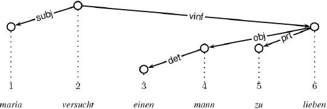
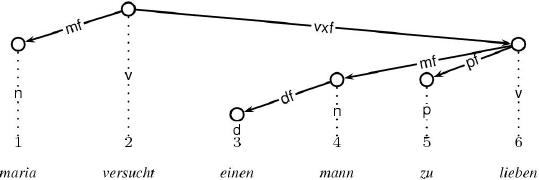

This section explains the Latex output functor.
output.latex
The Latex output functor assumes that the graph principle is used on the output dimension.
The resulting LaTeX output makes use of the style file
xdag.sty, which is based on the original style file
dtree.sty by Denys Duchier.
Unix users can use the shell script xdag2eps to convert the
latex output into encapsulated postscript (EPS), xdag2pdf into
PDF, or xdag2jpg to JPG. xdag2eps, xdag2pdf and
xdag2jpg require the style file xdag.sty to be in the
current directory. The latex file to convert is also required to be in
the current directory.
Below, we display an example Latex output after having been compiled into pdf:

And below, we display an example Dag output including node labels (written on the vertical projection edges):

To get the LaTeX output into a file, just tick file in the
Extras pull-down menu instead of the default
inspect. This effects that all output normally printed using
the Oz Inspector is redirected into a file. Whenever this happens, you
are asked where to create this file. Having the file in your hands,
you can then convert it into EPS, PDF or JPG using the scripts
xdag2eps, xdag2pdf and xdag2jpg, respectively.
Here is the LaTeX code for the latter Dag:
\begin{xdag}
\node{1}{2}{$\begin{array}{c}1\\\\\textrm{maria}\end{array}$}{n}
\node{2}{1}{$\begin{array}{c}2\\\\\textrm{versucht}\end{array}$}{v}
\node{3}{4}{$\begin{array}{c}3\\\\\textrm{einen}\end{array}$}{d}
\node{4}{3}{$\begin{array}{c}4\\\\\textrm{mann}\end{array}$}{n}
\node{5}{3}{$\begin{array}{c}5\\\\\textrm{zu}\end{array}$}{p}
\node{6}{2}{$\begin{array}{c}6\\\\\textrm{lieben}\end{array}$}{v}
\edge{6}{5}{pf}
\edge{6}{4}{mf}
\edge{4}{3}{df}
\edge{2}{6}{vxf}
\edge{2}{1}{mf}
\end{xdag}
The Latex output functor paints dags using the xdag environment
from the xdag.sty style file. xdag provides two basic
commands: \node and \edge.
\node has four arguments:
\edge has three arguments:
Notice that you can increase the horizontal distance between nodes
using the \xdagExtraColSep command:
\begin{xdag}
\xdagExtraColsep{1}{20pt}
\node{1}{2}{$\begin{array}{c}1\\\\\textrm{maria}\end{array}$}{n}
\node{2}{1}{$\begin{array}{c}2\\\\\textrm{versucht}\end{array}$}{v}
\node{3}{4}{$\begin{array}{c}3\\\\\textrm{einen}\end{array}$}{d}
\node{4}{3}{$\begin{array}{c}4\\\\\textrm{mann}\end{array}$}{n}
\node{5}{3}{$\begin{array}{c}5\\\\\textrm{zu}\end{array}$}{p}
\node{6}{2}{$\begin{array}{c}6\\\\\textrm{lieben}\end{array}$}{v}
\edge{6}{5}{pf}
\edge{6}{4}{mf}
\edge{4}{3}{df}
\edge{2}{6}{vxf}
\edge{2}{1}{mf}
\end{xdag}
Here, the horizontal distance between the first and the second node is
increased by 20pt. You can also set this distance all nodes
using \xdagColsep, as in the following example:
\begin{xdag}
\xdagColsep=20pt
\node{1}{2}{$\begin{array}{c}1\\\\\textrm{maria}\end{array}$}{n}
\node{2}{1}{$\begin{array}{c}2\\\\\textrm{versucht}\end{array}$}{v}
\node{3}{4}{$\begin{array}{c}3\\\\\textrm{einen}\end{array}$}{d}
\node{4}{3}{$\begin{array}{c}4\\\\\textrm{mann}\end{array}$}{n}
\node{5}{3}{$\begin{array}{c}5\\\\\textrm{zu}\end{array}$}{p}
\node{6}{2}{$\begin{array}{c}6\\\\\textrm{lieben}\end{array}$}{v}
\edge{6}{5}{pf}
\edge{6}{4}{mf}
\edge{4}{3}{df}
\edge{2}{6}{vxf}
\edge{2}{1}{mf}
\end{xdag}